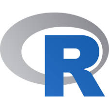

O Python é uma linguagem de programação amplamente usada em aplicações da Web, desenvolvimento de software, ciência de dados e machine learning (ML). Os desenvolvedores usam o Python porque é eficiente e fácil de aprender e pode ser executada em muitas plataformas diferentes. O software Python pode ser baixado gratuitamente, integra-se bem a todos os tipos de sistema e agiliza o desenvolvimento.
Java é uma linguagem de programação orientada a objetos e uma plataforma de software com as regras e a sintaxe baseadas nas linguagens C e C++. É executada em bilhões de dispositivos, incluindo notebooks, dispositivos móveis, consoles de jogos, dispositivos médicos e muitos outros.
A C# (lê-se “C sharp”) é a principal linguagem de programação em .NET. Inclusive, ela surgiu com a primeira versão da plataforma, em 2002.
Com C# é possível desenvolver aplicações de praticamente todos os tipos: desde aplicações embarcadas até aplicativos de área de trabalho, mobile e sistemas web.
Tem uma sintaxe simples, o que facilita a aprendizagem. Isso se consolidou porque, em seu processo de desenvolvimento, foram adotadas facilidades das linguagens C e C++, além de outros recursos mais avançados provenientes das linguagens (como Java).

R é uma linguagem de programação multi-paradigma orientada a objetos, programação funcional, dinâmica, fracamente tipada, voltada à manipulação, análise e visualização de dados.